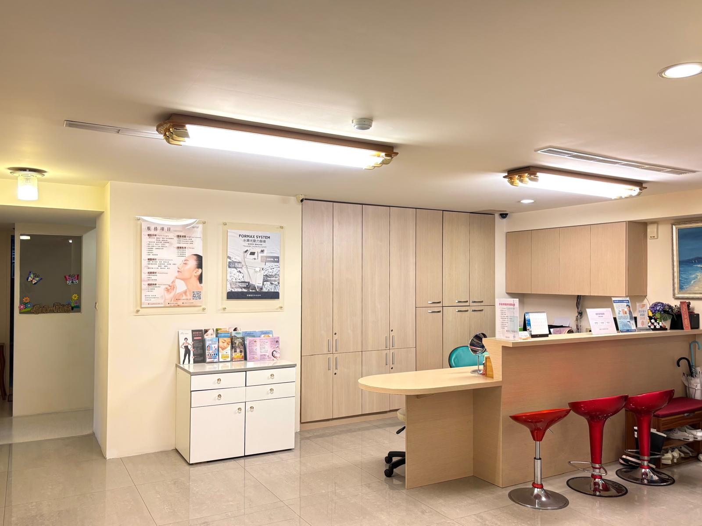

安麗整形外科診所於2006年創立，座落台北市精華地段，以溫潤明亮的空間，打造安心且放鬆的醫美體驗。
Founded in 2006, Angel Beauty Plastic Surgery Clinic is located in the heart of Taipei. Our warm, light-filled space is designed to create a reassuring and relaxing aesthetic medicine experience for every patient.
陳院長擁有逾30年整形外科與20年醫學美容執業資歷，曾赴歐美頂尖醫學中心進修，專精微整美形與外科重塑，以自然、精緻的美學理念深獲患者信賴。
Dr. Chen brings over 30 years of experience in plastic surgery and 20 years in aesthetic medicine. He has trained at leading medical centers in North America, and specializes in minimally invasive aesthetics and surgical reconstruction. His natural, refined approach to beauty has earned the trust of patients for decades.
歡迎預約諮詢，讓陳院長與專業團隊為您規劃最合適的療程方案。
Ready to begin your aesthetic journey? Book a consultation and let Dr. Chen and our team design the right treatment plan for you.